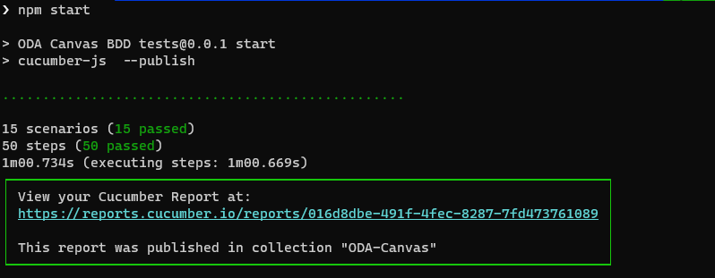
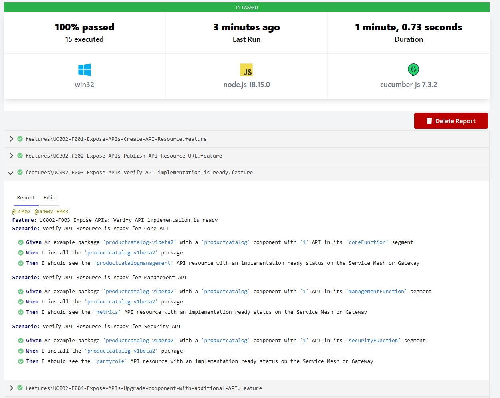

ODA Canvas Features and Test Kit
The ODA Canvas takes a Behaviour Driven Design (BDD) approch to define the features of the canvas. BDD allows you to specify the desired behavior of software through examples in plain language that both business stakeholders and technical teams can understand. These examples are written in a format known as Gherkin, which uses Given-When-Then syntax to describe test scenarios.
Given: This part of the syntax sets the scene for the scenario. It describes the initial context or the pre-conditions of the system before the key action is performed. Example: “Given the user is logged into their account”
When: This section describes the event or the action that triggers the scenario. It is the key action that the user performs or the event that occurs within the system. Example: “When the user clicks on the delete account button”
Then: This final part specifies the expected outcome or the post-conditions following the action described in the When section. It clearly defines what success (or sometimes failure) looks like. Example: “Then the user’s account is deactivated and the user is redirected to the homepage”
By defining the desired behavior of the software through examples, you can then implement automated tests to verify that the software behaves as expected. This approach helps to ensure that the software meets the requirements of the business and that it continues to do so as it evolves over time. The automated tests are written in step definitions that map the plain language examples to code that interacts with the software under test.
Linkage to use-cases
Each BDD feature is linked to the respective use-case in the use-case library. The use-case provides the context and details for the feature. This linkage ensures that the features and are aligned with the overall design of the ODA Canvas and that the tests are verifying the correct behavior.
Work breakdown
For contributors contributing new features to the ODA Canvas, the expectation is that the contibuitor will define the features alongside implementing the software. Instead of having separate design, development and test teams, the approach is to separate work into different features and have the same contributor (or small team) work on the feature from design to implementation to testing. This approach is known as feature-driven development and is a key part of the agile methodology.
List of BDD Features
The list below shows the features organized by use case, with their current test status indicated. ✅ indicates the corresponding test is ready, ⏳ indicates the test has yet to be defined.
UC002 - Manage Components
UC003 - Expose APIs for Component
UC005 - Configure Users and Roles
UC007 - Dependent APIs
UC010 - Authentication External
UC013 - Seamless upgrade
UC015 - API Gateway configuration
Executing the BDD tests
Follow the instructions in executing tests to run the BDD tests.
When you run the tests, the test results are reported in the console and in a HTML report. The console output is shown below:

And the cucumber report will look like this:
